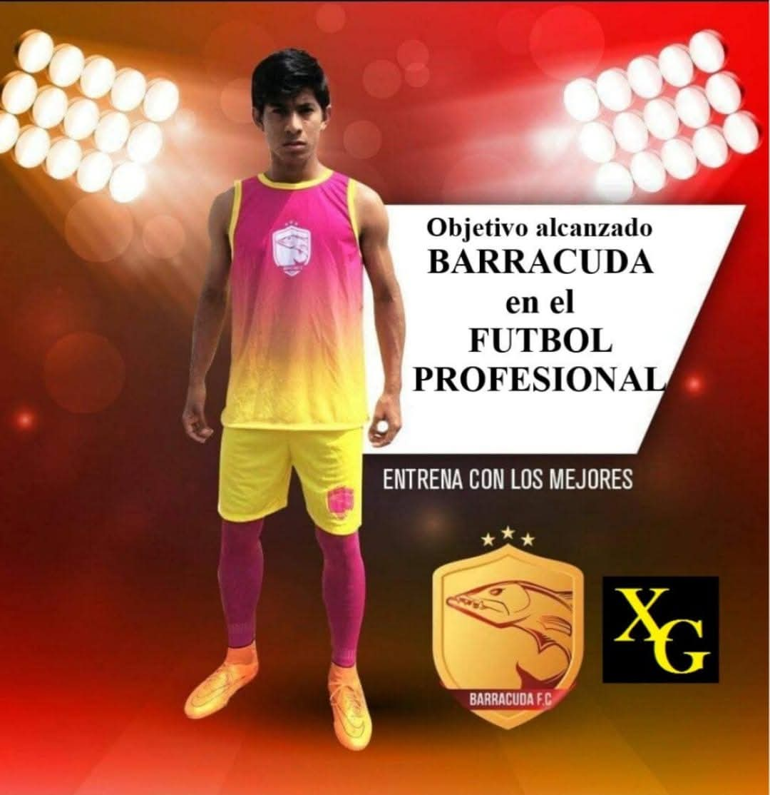
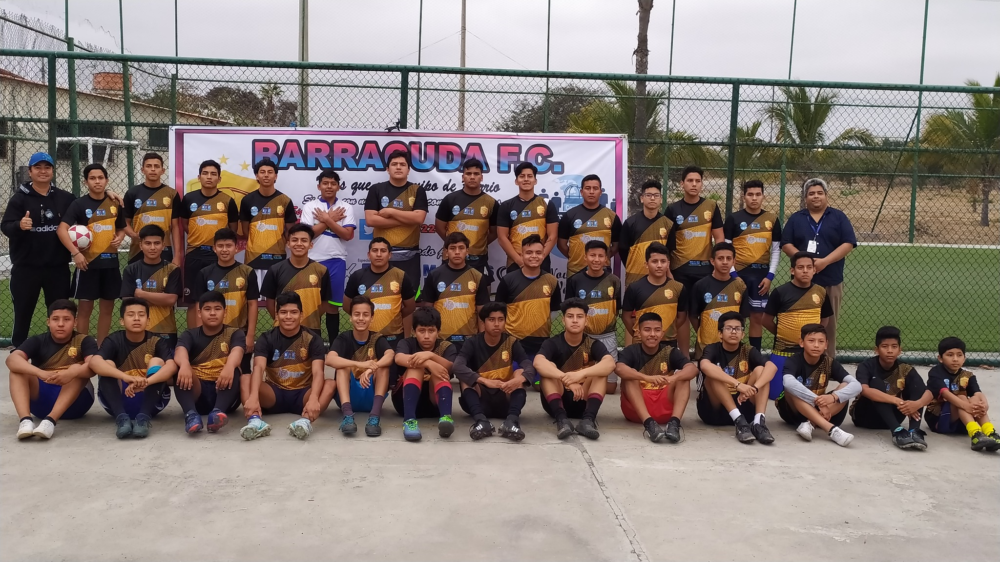
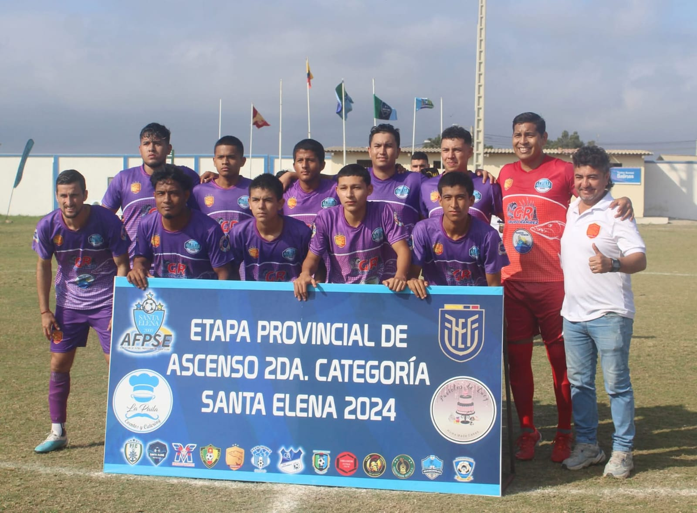
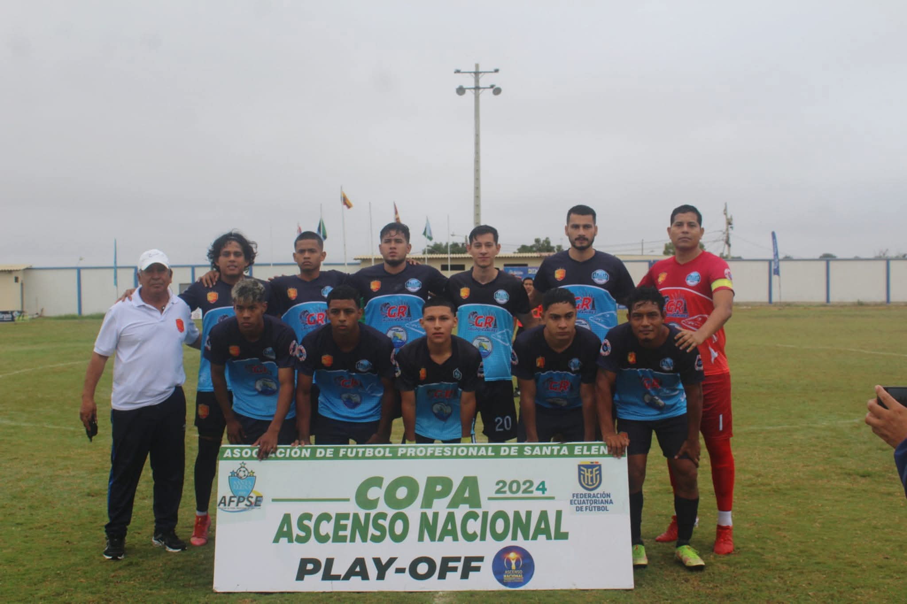
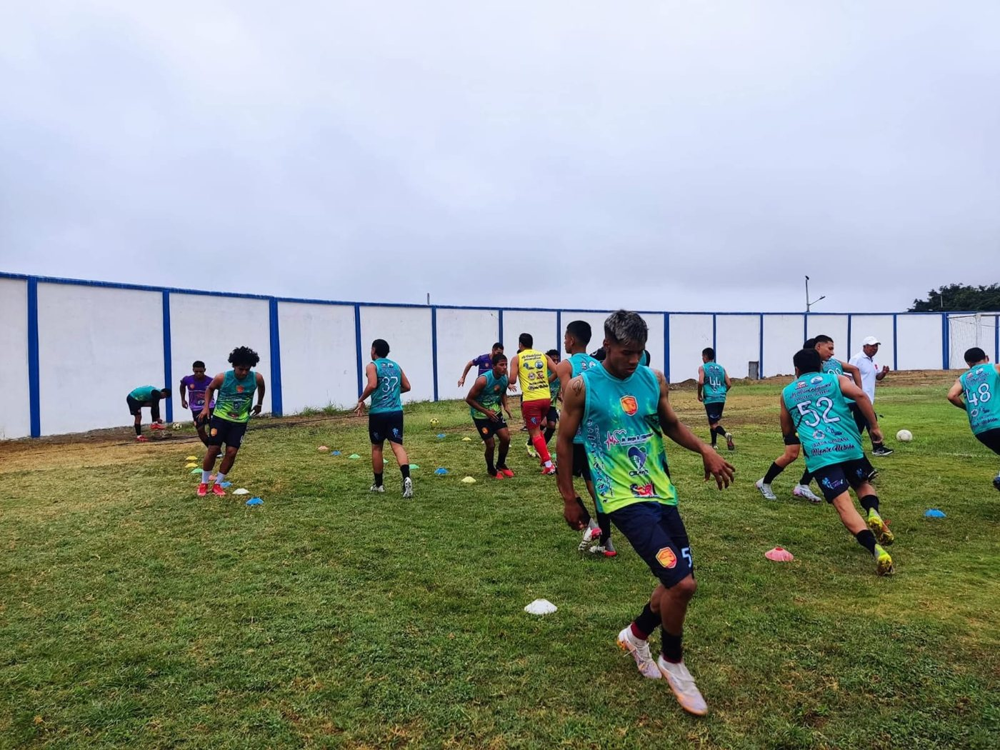
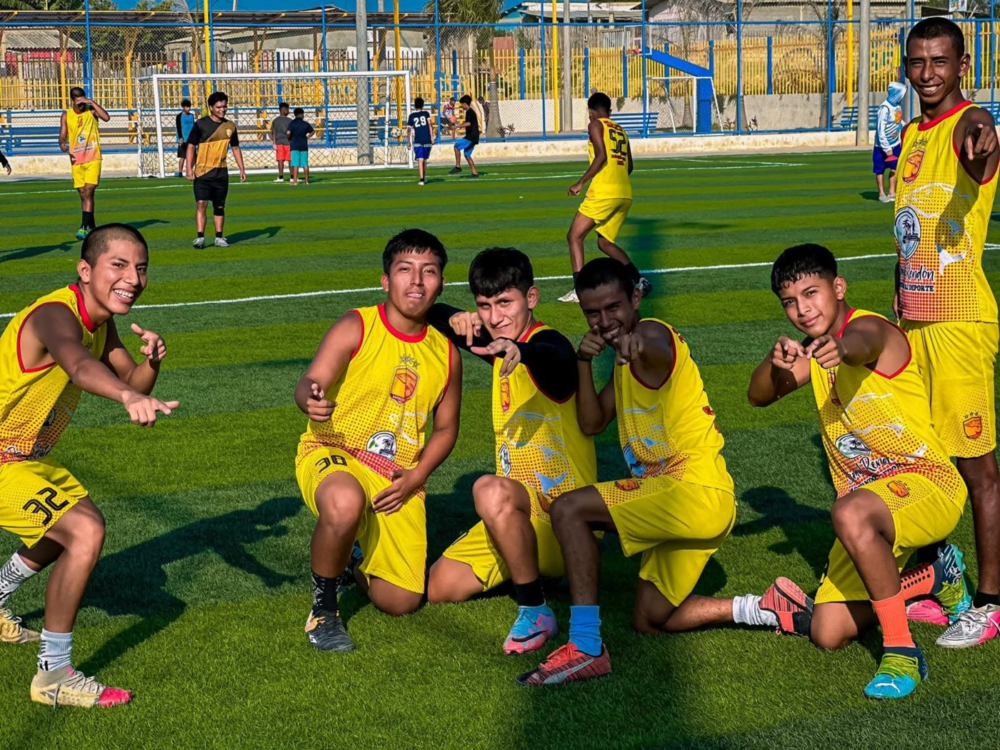

El fútbol nos reúne en una cancha, pero su verdadero alcance se descubre en las oportunidades que abre, los valores que transmite y las personas que ayuda a formar.
Un sueño que nació en Salinas
El 29 de abril de 2017 nació en Salinas, provincia de Santa Elena, Barracuda F.C., con una convicción que sigue orientando nuestro camino: el deporte puede ser una herramienta de formación, integración y desarrollo humano.
Desde nuestros primeros pasos comprendimos que construir una institución deportiva significa mucho más que organizar entrenamientos o participar en competencias. Significa trabajar con responsabilidad hacia los deportistas, sus familias y la comunidad.
Nuestros uniformes: de los primeros entrenamientos al fútbol profesional
Nuestro primer uniforme: fucsia y amarillo
Fue el primer uniforme de Barracuda F.C. y se utilizó exclusivamente en entrenamientos. Su combinación de fucsia y amarillo se convirtió en una imagen representativa de los comienzos del equipo.

Competición antes de la etapa profesional: negro y dorado
Antes de nuestra etapa como club profesional, competimos con una camiseta negra y dorada. Esta fotografía conserva el recuerdo de ese periodo formativo y competitivo.

Primeros uniformes profesionales: morado y azul
El morado y el azul oscuro con azul celeste fueron los primeros uniformes de nuestra etapa profesional. Las fotografías que conservamos documentan su utilización en competiciones de ascenso durante 2024.

Azul oscuro y celeste: etapa provincial de ascenso 2024
Esta fotografía corresponde a la participación de Barracuda F.C. en la etapa provincial de ascenso de Segunda Categoría de Santa Elena en 2024, con el uniforme azul oscuro y azul celeste.

Cada uniforme representa una etapa de nuestra historia. Sus colores han cambiado, pero nuestro compromiso con la formación, el esfuerzo y el futuro de Barracuda F.C. permanece.
Formar personas antes que futbolistas
Creemos que la formación deportiva debe estar acompañada de respeto, disciplina, responsabilidad, honestidad, solidaridad y trabajo en equipo. Cada entrenamiento ofrece oportunidades para aprender a escuchar, cumplir reglas, superar dificultades y valorar el esfuerzo de los compañeros.
El esfuerzo cotidiano construye grandes objetivos
Detrás de cada jornada hay preparación, constancia y trabajo compartido. Las imágenes de nuestros entrenamientos muestran a deportistas practicando movimientos, coordinación y ejercicios en equipo: momentos cotidianos que forman parte de la vida del club.

La dedicación de jugadores, entrenadores, dirigentes y familias es esencial para construir un entorno de aprendizaje y acompañamiento.

Educación y deporte: un compromiso inseparable
El fútbol debe complementar la educación y nunca convertirse en un obstáculo para ella. Aspiramos a que nuestros deportistas desarrollen capacidades dentro y fuera de la cancha y encuentren en el deporte una motivación para continuar su formación académica y personal.
Los resultados deportivos importan, pero también importa que cada joven pueda prepararse para diferentes oportunidades en su futuro.
Una visión de futuro: Ciudad Deportiva Barracuda
Con la mirada puesta en las próximas generaciones, impulsamos la planificación del Proyecto Maestro Centro de Desarrollo Integral Barracuda 2026–2046, una propuesta de largo plazo que contempla instalaciones deportivas y espacios de formación, atención integral y convivencia.
Esta visión busca fortalecer, de manera progresiva y responsable, las oportunidades de desarrollo deportivo y educativo en Santa Elena.
Una historia que seguimos construyendo
Desde aquel primer uniforme fucsia y amarillo, pasando por nuestras primeras competiciones con el negro y dorado, hasta el inicio de la etapa profesional con el morado y el azul, cada capítulo representa el esfuerzo de quienes han formado parte de Barracuda F.C.
La historia continúa. Queremos preservarla con fidelidad, compartirla con orgullo y seguir trabajando para que las nuevas generaciones encuentren en el deporte un espacio de crecimiento.
Dr. H. C. Xavier Gavilanes
Club Profesional Barracuda F.C.